Префектура Окинава · город Окинава · пиво
Cliff Beer: крафтовое пиво из окинавской пшеницы, маракуйи и караки
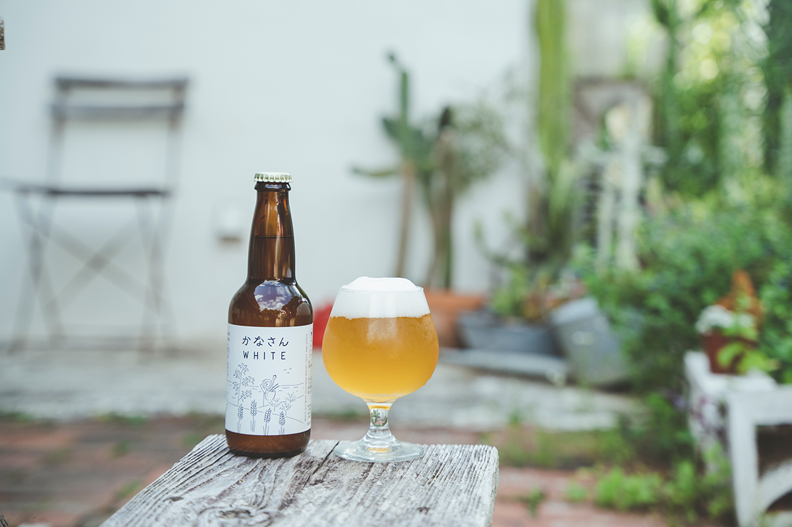
В префектуре Окинава работает около 14 небольших пивоварен, но Cliff Beer среди них особенная. Всё её пиво начинается на полях местных фермеров: пшеница, кориандр, маракуйя и окинавская корица растут здесь же, на острове.
Начало
Пиво как продолжение искусства
Cliff Beer появилась в 2018 году и очень быстро стала одной из самых известных пивоварен Окинавы. О ней заговорили сразу по трём причинам: окинавское сырьё, названия, от которых разыгрывается воображение, и этикетки, похожие на маленькие картины.
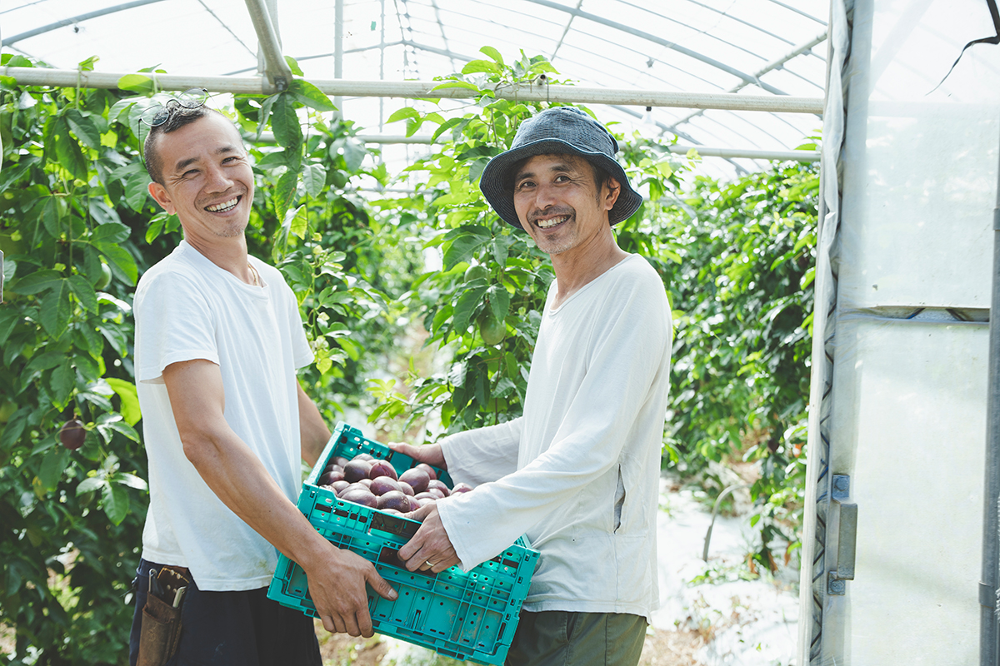
Основатель пивоварни Клифф Мияги работает как современный художник, иллюстратор и дизайнер. Десять лет он прожил в Великобритании и там открыл для себя «реальный эль», пиво по старинной технологии. Его варят из местного сырья, не фильтруют и не пастеризуют, а дображивает оно прямо в бочке: дрожжи продолжают работать, и вкус меняется, как у вина. На британских пивных фестивалях участники привозят свои бочки и пробуют пиво друг друга. Клиффа поразило, что здесь пьют не ради опьянения: пиво в Британии стало частью культуры и поводом для общения. Он решил, что варить пиво можно так же, как заниматься дизайном и искусством, и, вернувшись на Окинаву, взялся за дело всерьёз.
«Я хотел работать с окинавскими продуктами, которые выращены честно, поэтому без знакомства с фермерами было не обойтись»
Клифф Мияги, основатель Cliff Beer
Первым стал местный сорт пшеницы «Симамуги канасан». Потом Клиффа познакомили с руководителем проекта «Ямбару харуса», который выращивает острый кориандр, а после встречи с фермером из «Ямапа» появилось пиво Passion Wizard с маракуйей.
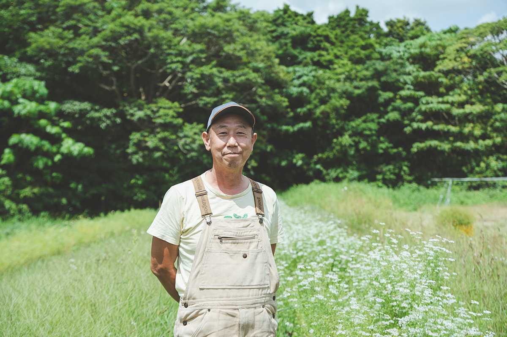
Поля
Ячмень, кориандр и маракуйя
В день съёмки собирали урожай. Клифф сам выращивает ячмень на поле, которое арендует у фермеров, а помогать пришли люди из союза производителей зерна префектуры Окинава. На острове все так или иначе знают друг друга.
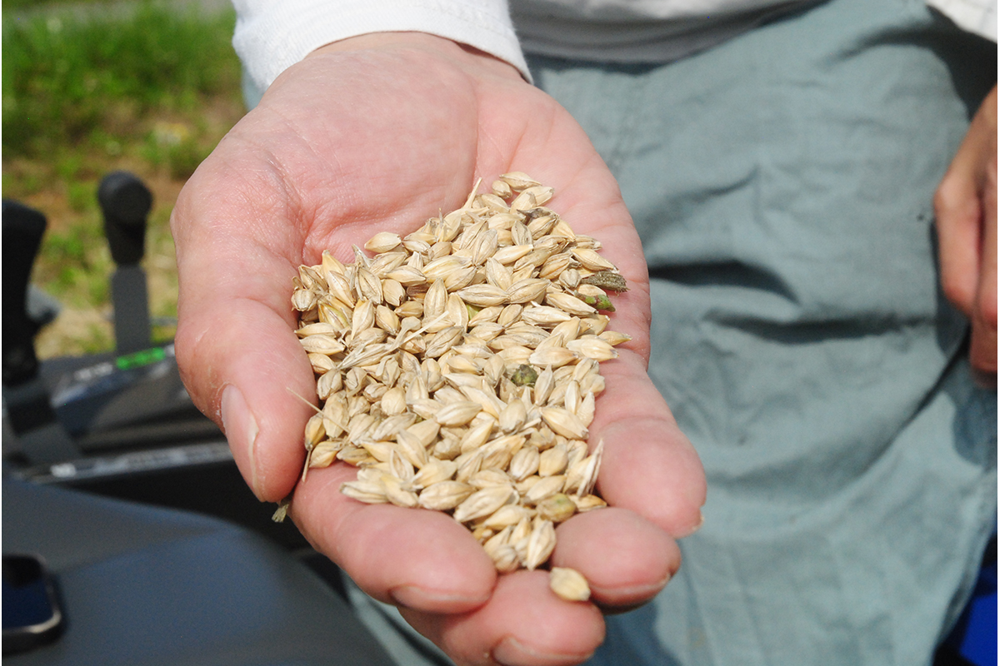
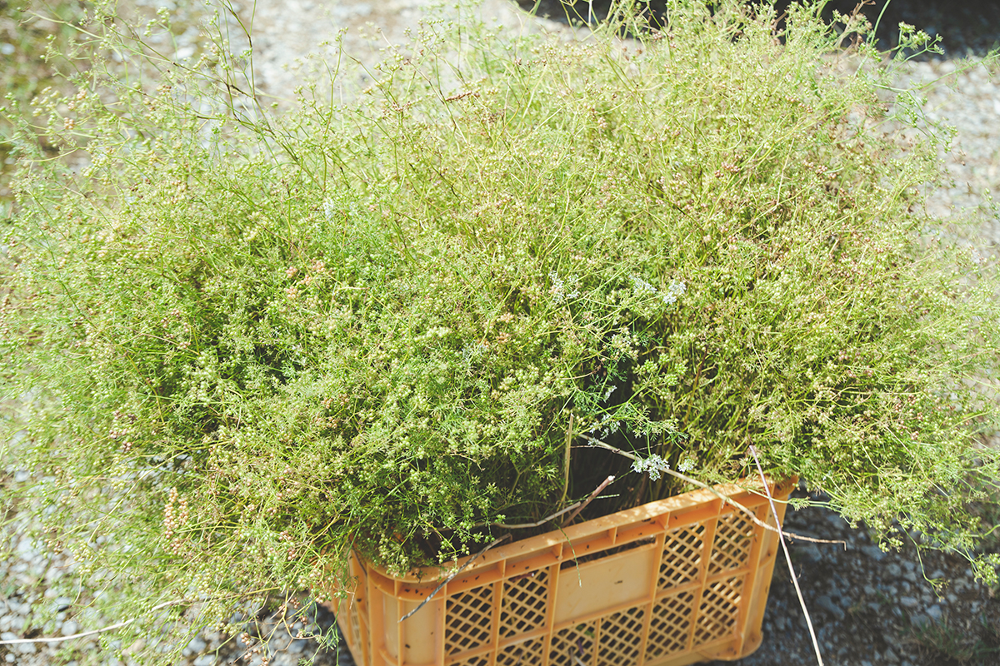
Маракуйю для пива берут у фермы «Ямапа». Там уверены, что всё начинается с почвы, и готовы предлагать Клиффу новые фрукты.
«Плоды, которые на рынке не проходят по стандарту, Клифф всё равно забирает. Для нас это большая помощь»
фермер с фермы «Ямапа»
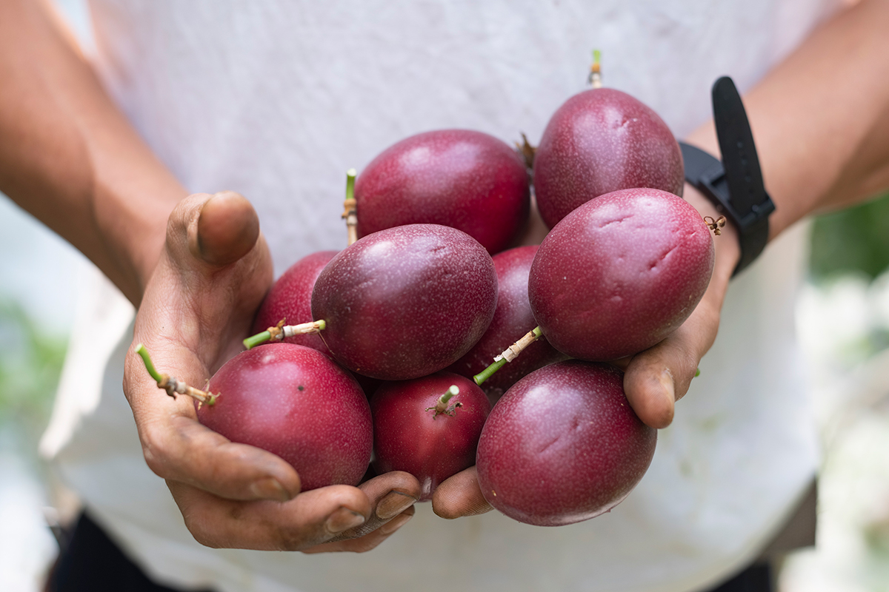
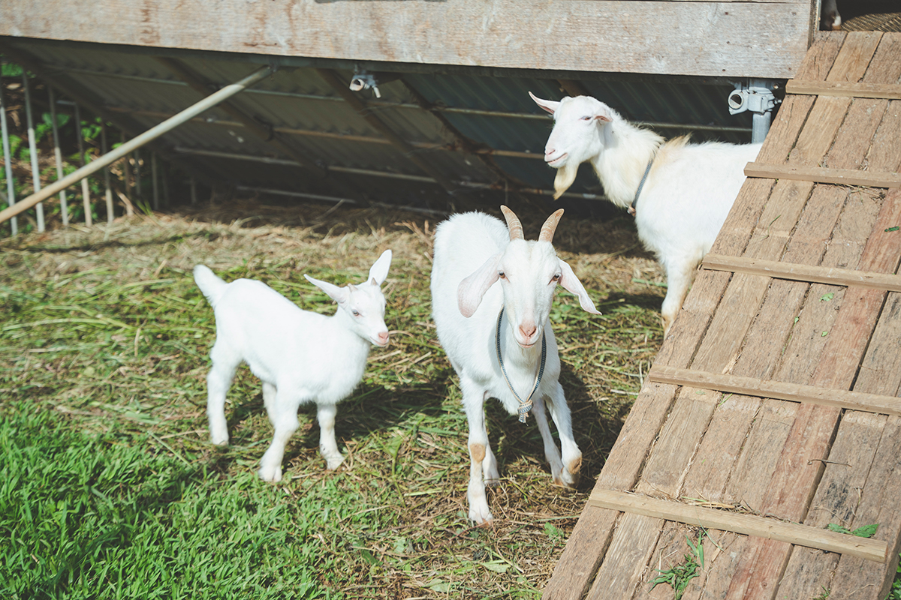
Пивоварня
Всё вручную
Пиво Cliff Beer продаётся по всей Японии: в ресторанах, продуктовых лавках и универмагах. Но магазин при пивоварне стоял в тихом жилом квартале города Окинава, на холме, и покупатели всё равно ехали сюда. Некоторые туристы добирались из Нахи на автобусах с пересадками.
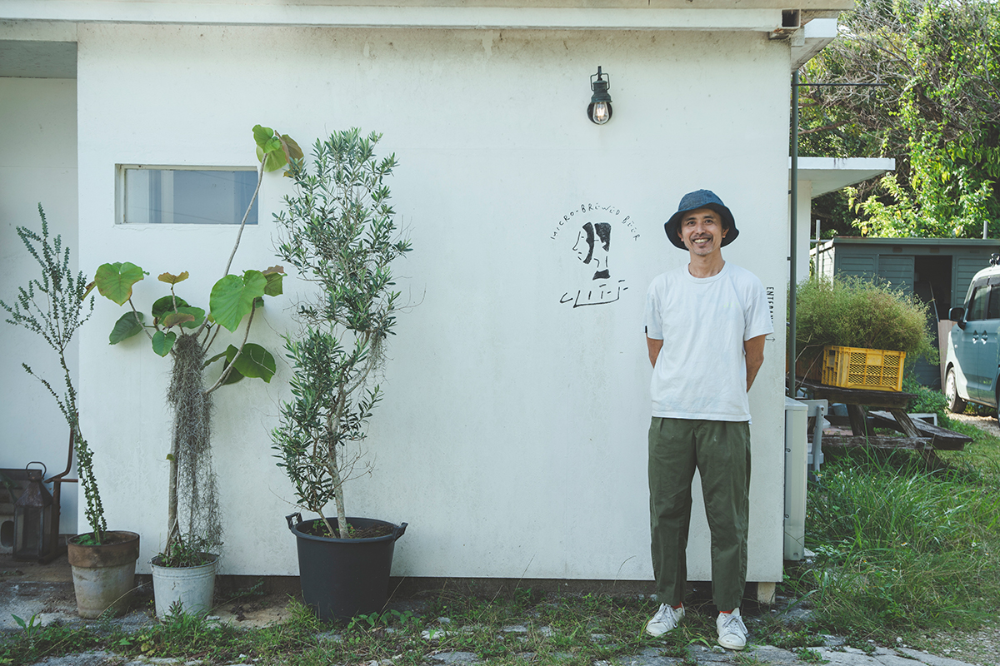
Под пивоварню был отдан один из «гайдзин дзютаку», домов, которые когда-то строили для иностранцев. За магазином начиналась мастерская: с потолка свисали трубы, и всё напоминало лабораторию. Клифф считает, что если понимаешь, как получается пиво, сделать оборудование несложно, и всё нужное собрал сам. От варки до отправки работа шла вручную, но без лишних движений. Посмотреть на мастерскую часто просили и те, кто сам мечтает варить пиво.
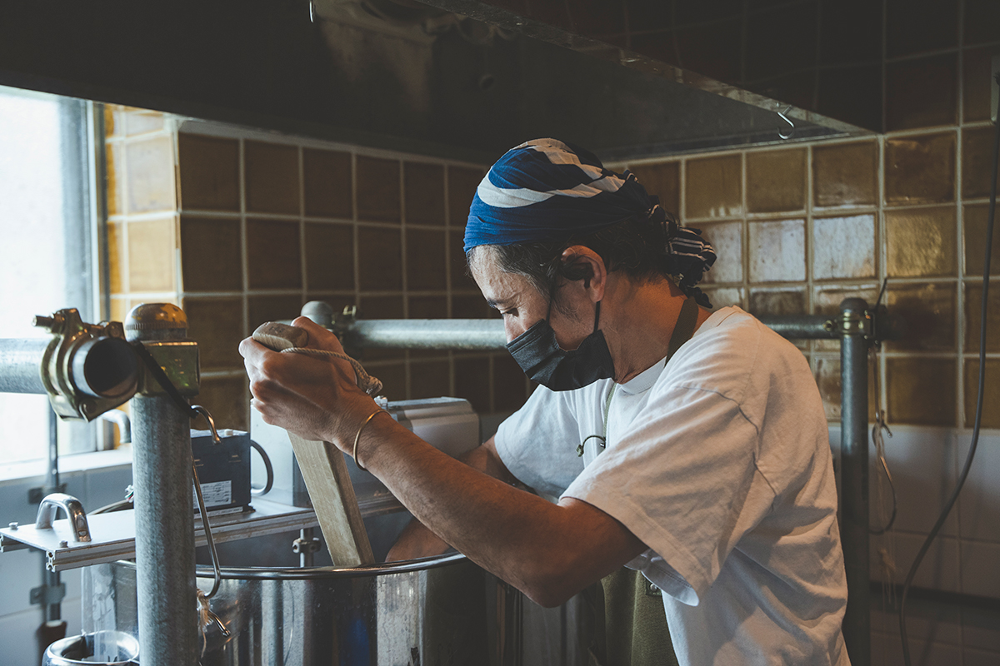
Пиво готово примерно через четыре недели или месяц. Важнее всего, на каком этапе добавить сырьё, чтобы раскрыть его по максимуму.
«Для меня в пиве главное аромат»
Клифф Мияги
Маракуйю, например, кладут во второй половине брожения, чтобы запах не улетучился.
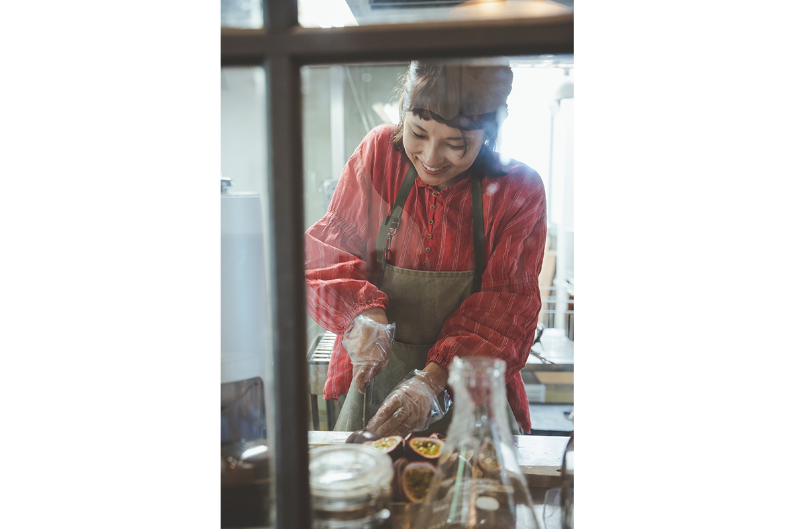
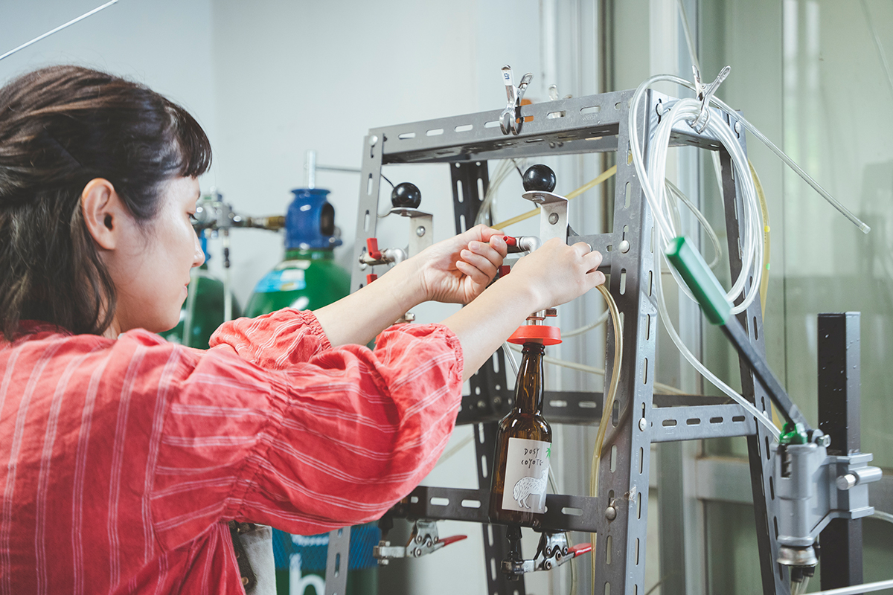
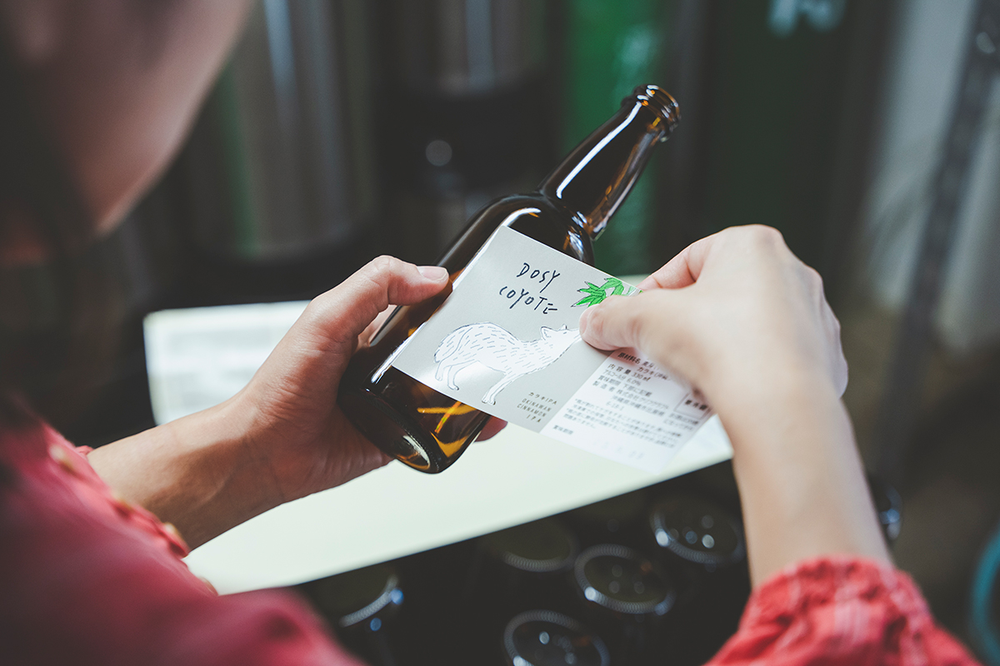
Клифф не хочет, чтобы что-то пропадало. Пивная дробина, которую после варки обычно выбрасывают, уходит на поля к другу, который растит бананы без пестицидов и химических удобрений.
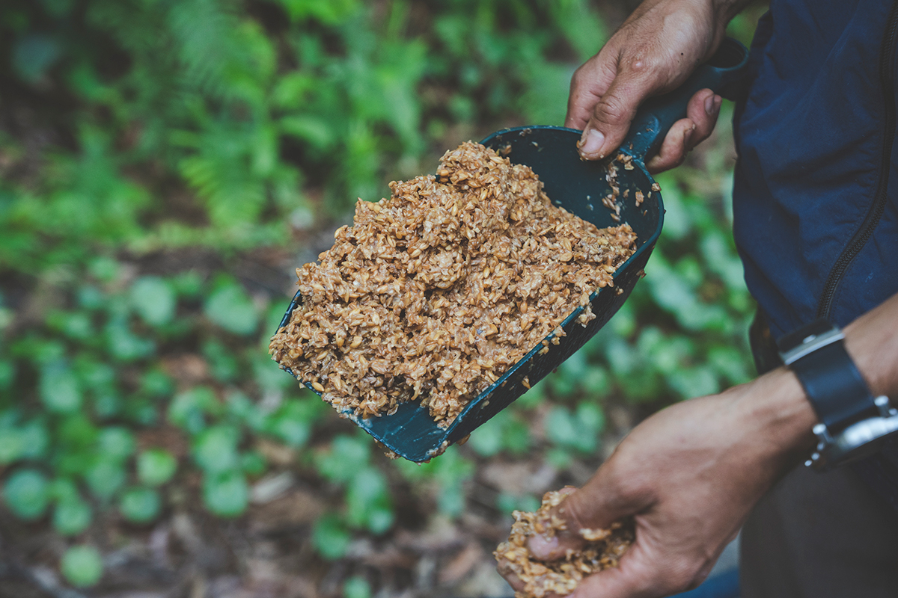
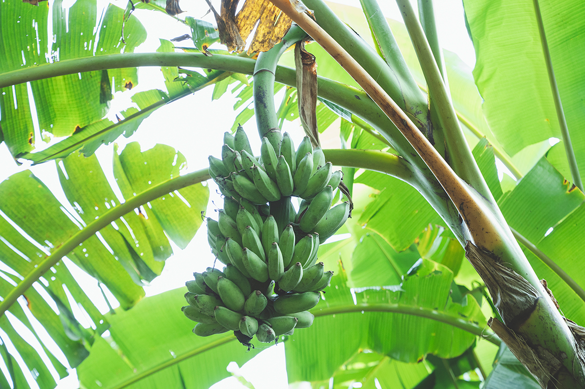
За пять лет пивоварня выросла: бывали дни, когда отсюда уходило больше 300 бутылок. В 2023 году ей стало тесно в любимом доме, и на осень того же года наметили переезд в большее помещение в том же городе.
Пиво
Сорта, которые быстро кончаются
Cliff Beer варит пэйл-эль, белый эль, IPA, вайцен, стаут, сезон и другие стили. Каждый из двадцати с лишним сортов, сваренных к 2023 году, появился вместе с небольшим производителем, который честно растит свой урожай. У каждого пива есть история, а этикетка подсказывает вкус. Иногда сначала приходит история, иногда вдохновляет сырьё.
Постоянные сорта здесь «Канасан WHITE» и DOSY COYOTE, остальные выходят ограниченными сериями. Даже постоянные сорта бывают сезонными или ограниченными по количеству, а готовое пиво быстро разъезжается, так что в магазине полный ассортимент собирается редко. Если увидели нужную бутылку, лучше брать сразу. Все цены ниже даны за бутылку 330 мл по состоянию на 2023 год.
«Канасан WHITE», белый эль, 5,5%, 759 иен. На этикетке девочка в соломенной шляпе на поле пшеницы «Симамуги канасан». Пиво фруктовое и пряное, его приятно неспешно пить комнатной температуры. Кроме британского ячменного солода в нём пшеница, пшеничный солод, овёс, апельсиновая цедра, кориандр, семена укропа и местный цитрус кабути.
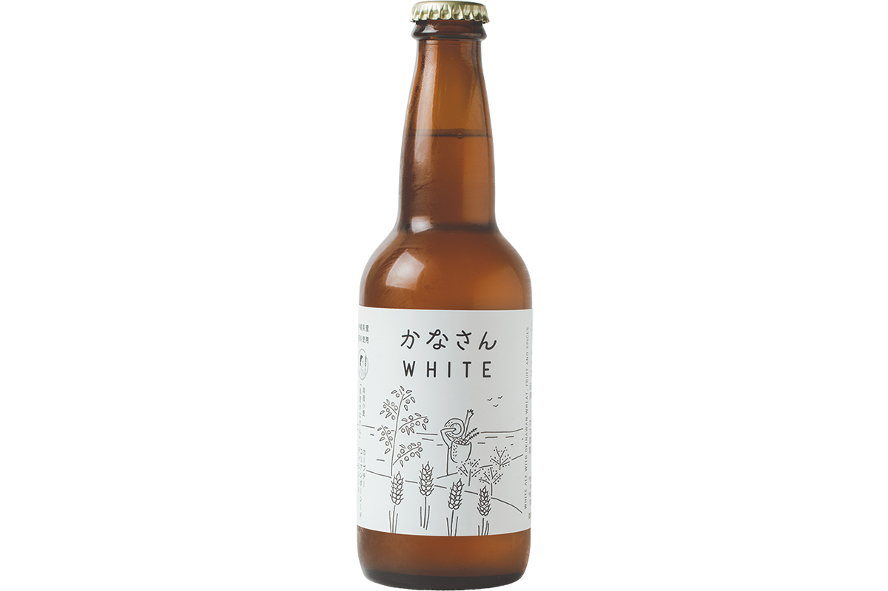
PINEAPPLE GEEK, фруктовый IPA, 6%, 781 иена. Герой этикетки плавает в бассейне из ананасов на ананасовом круге и пьёт ананасовый сок. Свежесть и умеренная горечь хорошо дополняют друг друга.
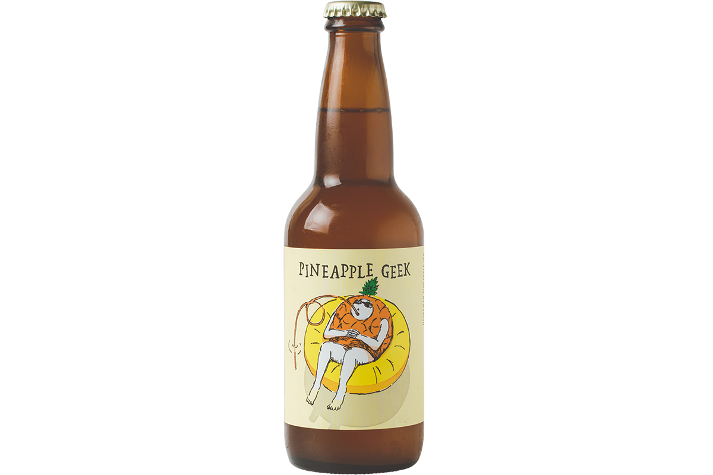
WHISTLEY WILD, французский сезон, 5,5%, 781 иена. Сварен вместе с шефом ресторана «Дэнкю». На этикетке девочка свистит в травинку лемонграсса. Вкус лёгкий и свежий, с ароматом трав: в пиве лемонграсс и мята.
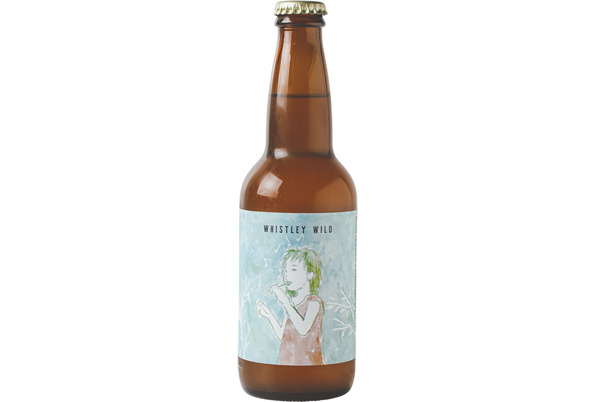
DOSY COYOTE, IPA с караки, 6%, 759 иен. Американский койот пересёк время и пространство, попал на Окинаву и задремал, опьянев от караки. Караки называют окинавской корицей, и вкус у пива мягкий.
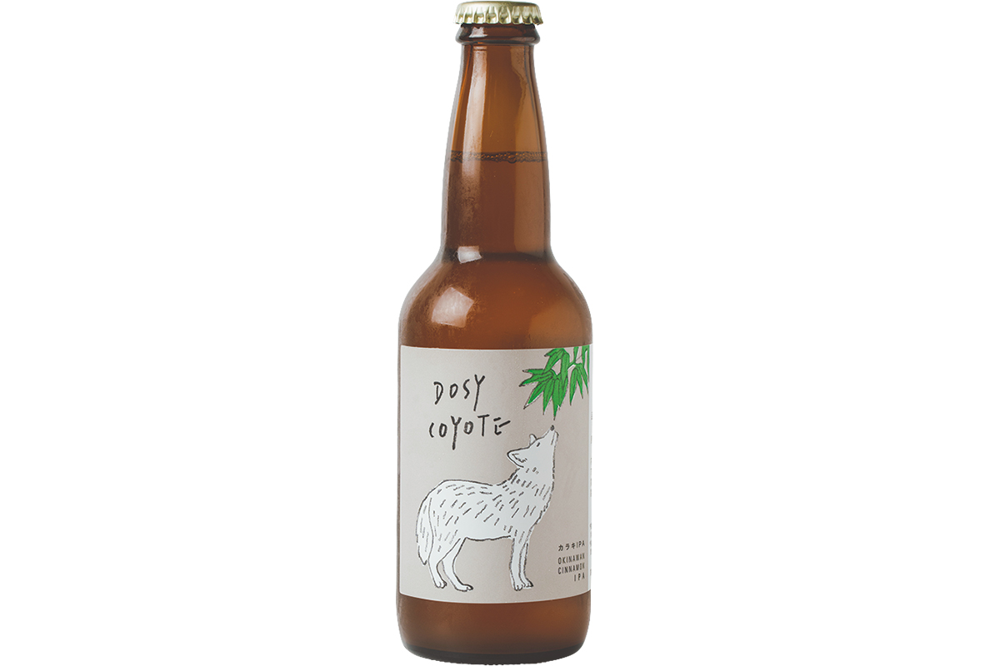
UNCLE MANGO, вайцен, 5%, 792 иены. Кошка, шансонье с хриплым голосом, поёт от радости: дядя с острова Исигаки прислал ей манго. Пиво свежее и фруктовое, манго окинавское.
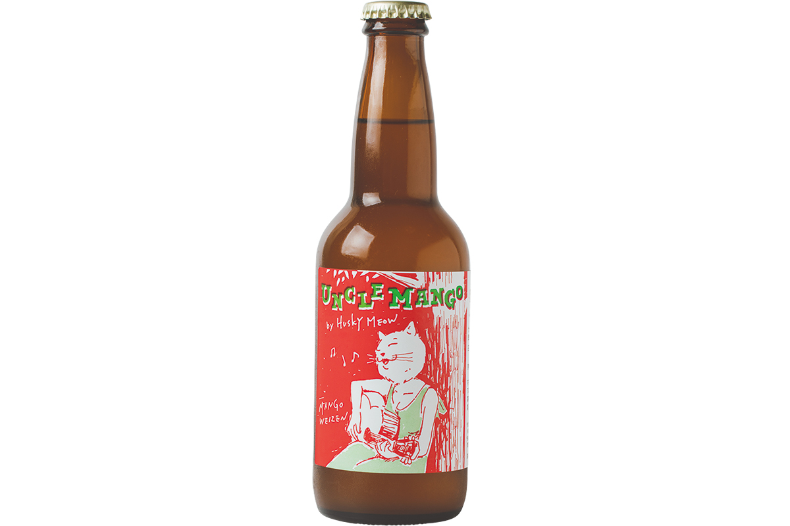
«Бунго», стаут с горьким шоколадом, 6,5%, 748 иен. Писатель-эстет любит розы больше, чем женщин, и дарит цветы той, кого выбрал ради роз. Тёмное пиво с какао кажется сладким, но сладким не оказывается.
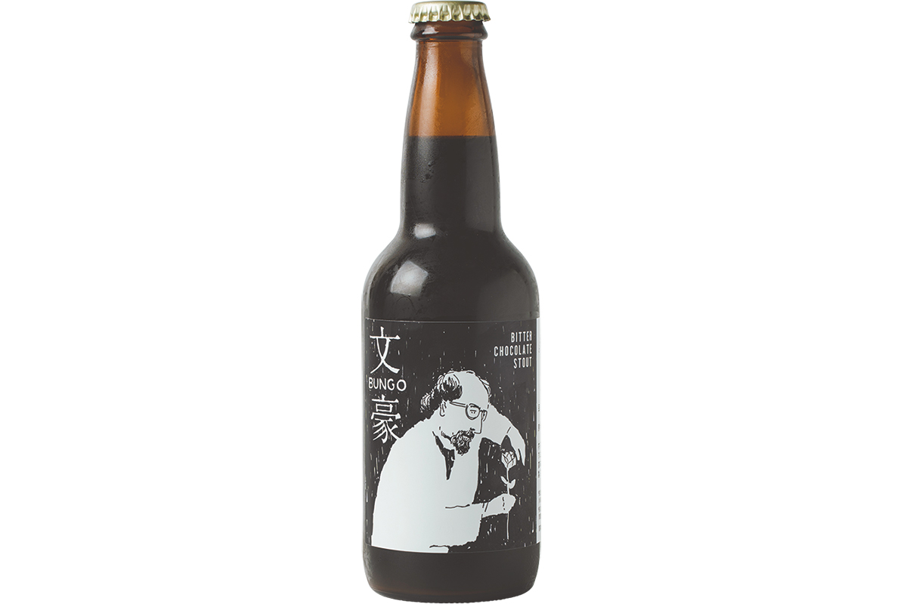
Passion Wizard, кислый эль, 5,5%, 792 иены. На этикетке весёлый фермер с фермы «Ямапа». Свежий аромат маракуйи оттеняют соль и кориандр.
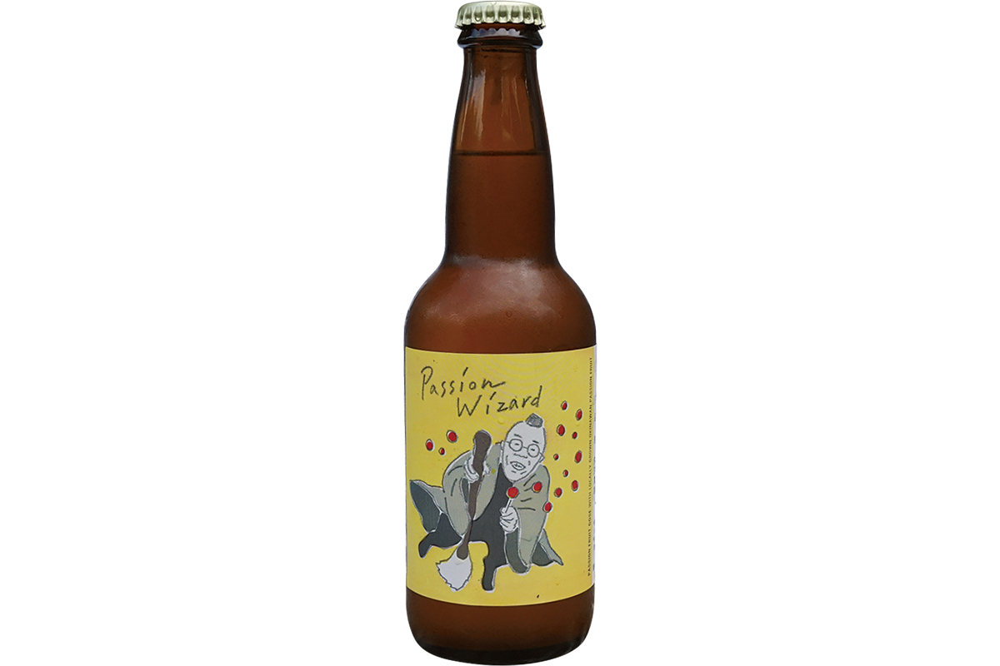
Крафтового пива на Окинаве варят много, но так полно почувствовать дары острова можно, пожалуй, только у Cliff Beer. За каждой бутылкой стоит то самое общение, ради которого Клифф когда-то полюбил британский эль.
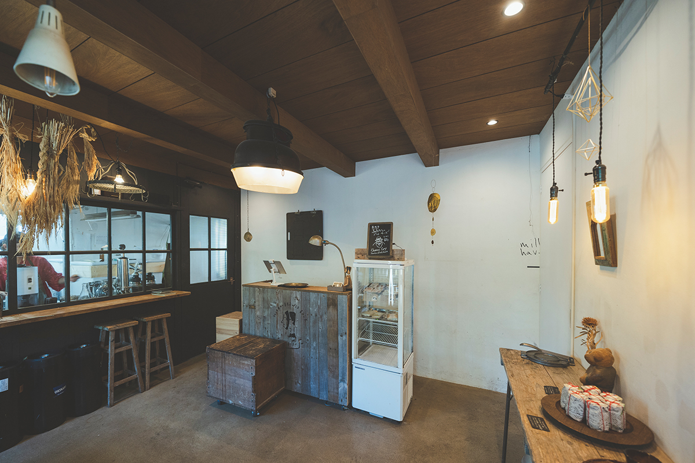
Cliff Beer (CLIFF GARO BREWING)
- Адрес
- префектура Окинава, город Окинава, Такахара, 6-2-8
- Телефон
- +81 98-953-7237
- Часы работы
- 12:00–19:00 (по данным 2023 года, бывают изменения, смотрите соцсети)
- Выходные
- понедельник–среда, воскресенье, а также нерегулярные
Фото: Цунэтака Симабукуро.